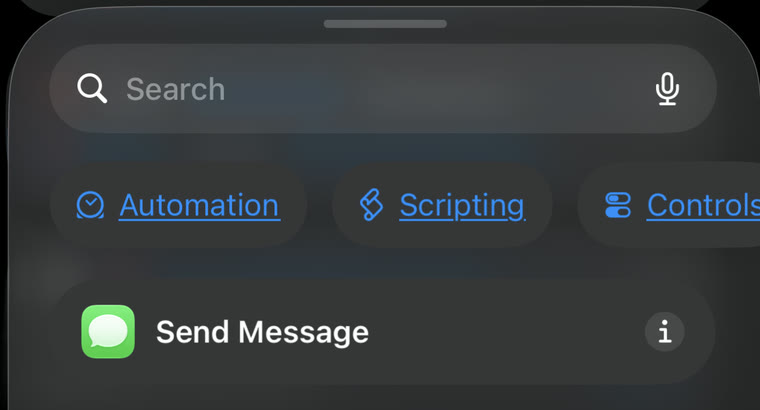
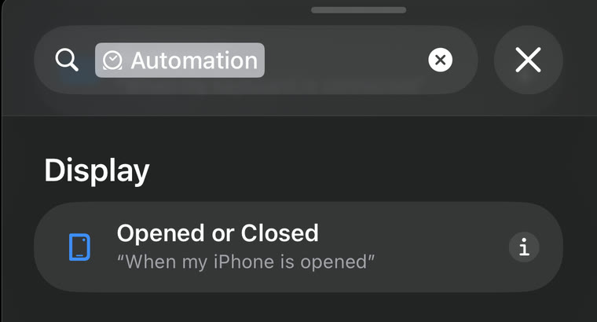
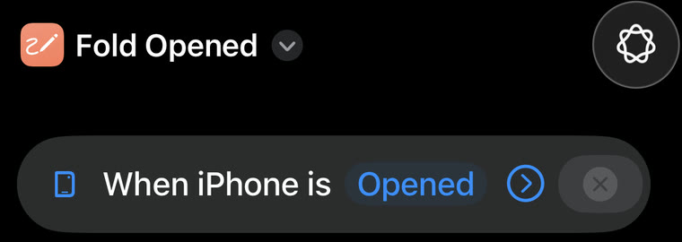
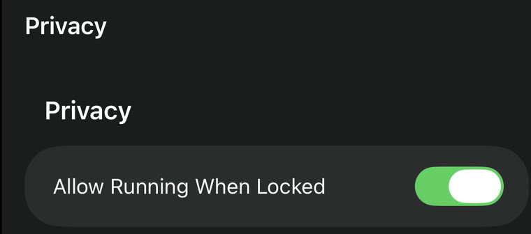
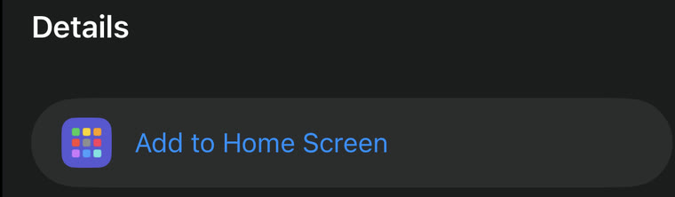

For iPhone Duo
Every fold, counted.
Folds counts every time you open and close your Duo.
Three Shortcuts. iOS 27.1 or later.
Setup
Set up in two minutes.
Three shortcuts, and a trigger on two of them.
Add the three shortcuts
On your Duo, tap each one to add it.
Turn each one into an automation
A shortcut you download doesn’t come with its trigger, so it won’t run on its own until you add one. Here’s Fold Opened, start to finish.
-

Open Fold Opened in Apple’s Shortcuts app. It’s already on your Duo; if you can’t find it, swipe down on the Home Screen and search for Shortcuts. Then swipe up on the search bar at the bottom and tap Automation.
-

Scroll to Display and tap Opened or Closed.
-

When iPhone is Opened now sits at the top. That’s the automation.
-

Tap ⓘ at the bottom, then Privacy, and turn on Allow Running When Locked. Tap ✓ to finish. The other switches there, like Show on Apple Watch, don’t matter for Folds.
Then do the same for Fold Closed, and tap Opened in its trigger to change it to Closed.
-
Give each one a test run
Run Fold Opened and Fold Closed once each and tap Always Allow, so the counting never stops.
-
Put Fold Stats on your Home Screen

Open Fold Stats, tap ⓘ, then Add to Home Screen. It follows Light and Dark Mode, and your folds stay yours: the log is duo-folds.csv in iCloud Drive, under Shortcuts.
Folds is free. Like it? Buy me a coffee.
Buy me a coffeeFrom the maker of Folds
Big screen radar.
Approach Traffic Control fills your Duo’s big screen. San Diego is free.